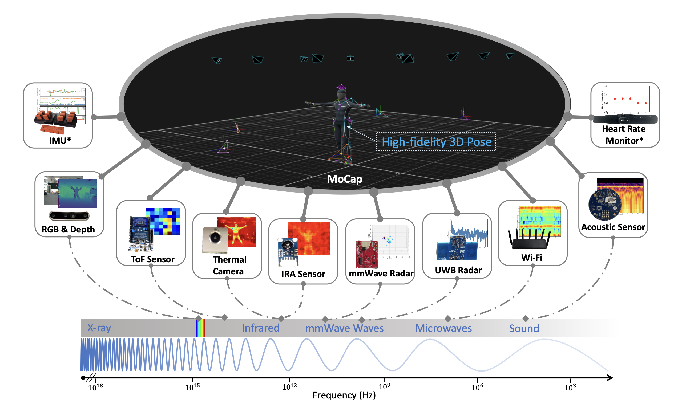
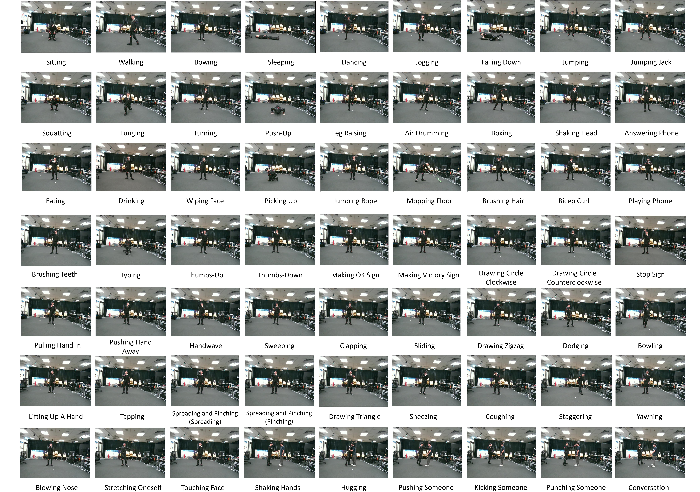

We introduce OctoNet, a large-scale, multi-modal, multi-view human activity dataset designed to advance human activity understanding and multi-modal learning. OctoNet comprises 13 heterogeneous modalities (including RGB, depth, thermal cameras, infrared arrays, audio, millimeter-wave radar, WiFi, IMU, and more) recorded from 41 participants under multi-view sensor setups, yielding over 67.72M synchronized frames. The data encompass 62 daily activities spanning structured routines, freestyle behaviors, human-environment interaction, healthcare tasks, etc. Critically, all modalities are annotated by high-fidelity 3D pose labels captured via a professional motion-capture system, enabling precise alignment and rich supervision across sensors and views. OctoNet's breadth and annotation richness enable a wider range of learning tasks such as action recognition, 3D pose estimation, multi-modal fusion, cross-modal supervision, and sensor foundation models. OctoNet is one of the most comprehensive datasets of its kind, offering a unique testbed for developing and benchmarking generalizable, robust models for human-centric perceptual AI.
Dataset Overview

Overview of sensing modalities in OctoNet. The system integrates wearable sensors
(marked with*) and non-contact modalities spanning the frequency spectrum, unified through
high-fidelity 3D poses from a professional motion capture system. These poses provide an explicit
representation to align and correlate multimodal data streams.
Video Demos
62 Activities

An illustration of the 62 distinct activities, which are further grouped into five subcategories reflecting different interaction contexts. Notes that we split spreading and pitching for visualization.